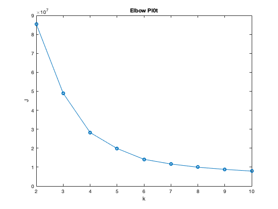
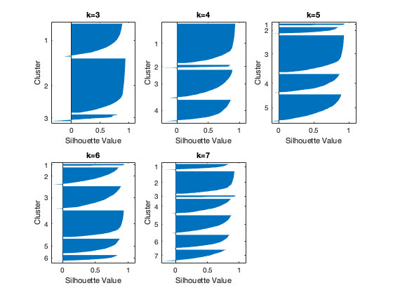

[data, TEXT, raw] = xlsread('nutrients.xlsx');
food_items = TEXT(2:end, 1:2);
X = data(:,1:end-1);
disp('4a)');
figure(1);
J = [];
cluster_centres = [];
for k=2:10
[idx, C, sumd] = kmeans(X, k, 'Start', 'sample', 'Replicates',100, 'MaxIter',200);
J = [J; sum(sumd)];
cluster_centres = [cluster_centres ; C];
end
plot(2:10, J, '-o');
xlabel('k');
ylabel('J');
title('Elbow Pl0t')
snapnow;
disp('Based on the elbow plot, I would consider K=4, 5 or 6 as the elbow');
disp('4b)')
figure(2);
i=1;
for k=3:7
subplot(2, 3, i);
[idx, C] = kmeans(X, k, 'Start', 'sample', 'Replicates',100, 'MaxIter',200);
[s, h] = silhouette(X, idx);
title(strcat('k=',int2str(k)));
fprintf("K=%d , Silhouette Score=%f \n", k, sum(s)/size(s, 1));
i = i+ 1;
end
snapnow;
disp("4c)")
start_idx = 1;
for k=2:10
indices = [];
centroids = cluster_centres(start_idx: start_idx+k-1, :);
for c=1:size(centroids,1)
[~, idx] = min(vecnorm(X-centroids(c,:),2,2));
indices = [indices; idx];
end
fprintf("K=%d, Food Representatives : \n", k);
disp(food_items(indices,:));
start_idx = start_idx +k;
end
disp('4d)');
disp(' From elbow plot, the conclusion was the choose K=4, 5, or 6.');
disp('From the silhouette values, though the average value is maximum when K=3, clusters don’t seem to be well distributed');
disp('- most of the items are in cluster 1 and extremely few in cluster 3. Similar observation with K=4 and K=5.');
disp('For K=6 and K=7, the cluster size distribution seems better.');
disp('However, by looking at the average silhouette score for varying K, the score for K=7 is much lower.');
disp(' From food domain knowledge, we can see that if we take K=6, we have food items from 6 different groups.');
disp('(Whereas for K=4, 5 or 7, some food groups are repeated). ');
disp('Hence, I think we should select K=6.');
4a)

Based on the elbow plot, I would consider K=4, 5 or 6 as the elbow
4b)
K=3 , Silhouette Score=0.742971
K=4 , Silhouette Score=0.716766
K=5 , Silhouette Score=0.706845
K=6 , Silhouette Score=0.680982
K=7 , Silhouette Score=0.650313

4c)
K=2, Food Representatives :
'Edamame, frozen, prepared' 'Vegetables and Vegetable Products'
'Croissants, cheese' 'Baked Products'
K=3, Food Representatives :
'Biscuits, plain or buttermilk, …' 'Baked Products'
'Stew, mutton, corn, squash (Nav…' 'Ethnic Foods'
'Nuts, formulated, wheat-based, …' 'Nut and Seed Products'
K=4, Food Representatives :
'Fast foods, miniature cinnamon …' 'Fast Foods'
'WENDY'S, CLASSIC SINGLE Hamburg…' 'Fast Foods'
'Soup, pea, split with ham, cann…' 'Soups, Sauces, and Gravies'
'Pork, cured, salt pork, raw' 'Pork Products'
K=5, Food Representatives :
'WORTHINGTON Stakelets, frozen, …' 'Legumes and Legume Products'
'Bread, pan dulce, sweet yeast b…' 'Baked Products'
'Pie crust, cookie-type, prepare…' 'Baked Products'
'Soup, vegetable chicken, canned…' 'Soups, Sauces, and Gravies'
'Pork, fresh, variety meats and …' 'Pork Products'
K=6, Food Representatives :
'Cereals ready-to-eat, POST, Gre…' 'Breakfast Cereals'
'Peppered loaf, pork, beef' 'Sausages and Luncheon Meats'
'McDONALD'S, DOUBLE QUARTER POUN…' 'Fast Foods'
'CAMPBELL Soup Company, CAMPBELL…' 'Soups, Sauces, and Gravies'
'Pork, fresh, variety meats and …' 'Pork Products'
'Pie crust, cookie-type, prepare…' 'Baked Products'
K=7, Food Representatives :
'Pork, fresh, variety meats and …' 'Pork Products'
'Turkey sausage, reduced fat, br…' 'Sausages and Luncheon Meats'
'Fast foods, bagel, with egg, sa…' 'Fast Foods'
'Soup, tomato rice, canned, prep…' 'Soups, Sauces, and Gravies'
'Cereals ready-to-eat, POST, Gre…' 'Breakfast Cereals'
'Sauce, alfredo mix, dry' 'Soups, Sauces, and Gravies'
'Honey loaf, pork, beef' 'Sausages and Luncheon Meats'
K=8, Food Representatives :
'Cereals ready-to-eat, granola, …' 'Breakfast Cereals'
'Nuts, formulated, wheat-based, …' 'Nut and Seed Products'
'BURGER KING, Cheeseburger' 'Fast Foods'
'Turkey sausage, reduced fat, br…' 'Sausages and Luncheon Meats'
'Honey loaf, pork, beef' 'Sausages and Luncheon Meats'
'Soup, tomato rice, canned, prep…' 'Soups, Sauces, and Gravies'
'Cereals ready-to-eat, POST, Gre…' 'Breakfast Cereals'
'Shortening, vegetable, househol…' 'Fats and Oils'
K=9, Food Representatives :
'Cereals ready-to-eat, QUAKER, Q…' 'Breakfast Cereals'
'Shortening, vegetable, househol…' 'Fats and Oils'
'Nuts, formulated, wheat-based, …' 'Nut and Seed Products'
'McDONALD'S, QUARTER POUNDER wit…' 'Fast Foods'
'WENDY'S, Chicken Nuggets' 'Fast Foods'
'MORNINGSTAR FARMS Hot and Spicy…' 'Legumes and Legume Products'
'Turkey, white, rotisserie, deli…' 'Sausages and Luncheon Meats'
'CAMPBELL Soup Company, CAMPBELL…' 'Soups, Sauces, and Gravies'
'Cereals ready-to-eat, granola, …' 'Breakfast Cereals'
K=10, Food Representatives :
'Turkey sausage, reduced fat, br…' 'Sausages and Luncheon Meats'
'CAMPBELL Soup Company, CAMPBELL…' 'Soups, Sauces, and Gravies'
'Fast foods, cheeseburger; singl…' 'Fast Foods'
'Shortening, vegetable, househol…' 'Fats and Oils'
'Nuts, formulated, wheat-based, …' 'Nut and Seed Products'
'LOMA LINDA Tender Bits, canned,…' 'Legumes and Legume Products'
'KENTUCKY FRIED CHICKEN, Fried C…' 'Fast Foods'
'Cereals ready-to-eat, QUAKER, Q…' 'Breakfast Cereals'
'Okra, frozen, cooked, boiled, d…' 'Vegetables and Vegetable Products'
'Cereals ready-to-eat, granola, …' 'Breakfast Cereals'
4d)
From elbow plot, the conclusion was the choose K=4, 5, or 6.
From the silhouette values, though the average value is maximum when K=3, clusters don’t seem to be well distributed
- most of the items are in cluster 1 and extremely few in cluster 3. Similar observation with K=4 and K=5.
For K=6 and K=7, the cluster size distribution seems better.
However, by looking at the average silhouette score for varying K, the score for K=7 is much lower.
From food domain knowledge, we can see that if we take K=6, we have food items from 6 different groups.
(Whereas for K=4, 5 or 7, some food groups are repeated).
Hence, I think we should select K=6.